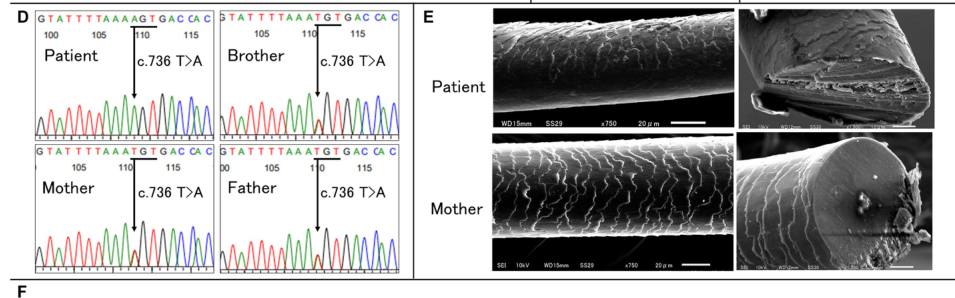

Isolated (non-syndromic) familial woolly hair is a rare congenital structural abnormality of the scalp hair shaft characterized by tightly curled, fine, fragile, and slow-growing hair present from birth in individuals not of African ancestry. Unlike syndromic woolly hair (e.g., Naxos and Carvajal cardiocutaneous syndromes or skin fragility-woolly hair syndrome), the isolated form has no cardiac, palmoplantar keratoderma, or skin-fragility features. It is genetically heterogeneous: autosomal recessive woolly hair with or without hypotrichosis is caused by biallelic loss-of-function variants in LIPH (lipase H, which generates 2-acyl lysophosphatidic acid) or LPAR6/P2RY5 (the lysophosphatidic acid receptor 6), disrupting the LPA-signaling axis required for hair-follicle differentiation; autosomal dominant woolly hair is caused by heterozygous variants in the hair-shaft keratin gene KRT74. The resulting hairs are abnormally curved with an altered cross-sectional shape, are difficult to comb, and may be associated with variable degrees of hypotrichosis (sparse hair).
Ask a research question about Isolated Woolly Hair. OpenScientist will conduct autonomous deep research using the Disorder Mechanisms Knowledge Base and PubMed literature (typically 10-30 minutes).
Do not include personal health information in your question. Questions and results are cached in your browser's local storage.
name: Isolated Woolly Hair
creation_date: "2026-06-08T00:00:00Z"
category: Mendelian
description: >
Isolated (non-syndromic) familial woolly hair is a rare congenital structural
abnormality of the scalp hair shaft characterized by tightly curled, fine,
fragile, and slow-growing hair present from birth in individuals not of African
ancestry. Unlike syndromic woolly hair (e.g., Naxos and Carvajal cardiocutaneous
syndromes or skin fragility-woolly hair syndrome), the isolated form has no
cardiac, palmoplantar keratoderma, or skin-fragility features. It is genetically
heterogeneous: autosomal recessive woolly hair with or without hypotrichosis is
caused by biallelic loss-of-function variants in LIPH (lipase H, which generates
2-acyl lysophosphatidic acid) or LPAR6/P2RY5 (the lysophosphatidic acid receptor
6), disrupting the LPA-signaling axis required for hair-follicle differentiation;
autosomal dominant woolly hair is caused by heterozygous variants in the
hair-shaft keratin gene KRT74. The resulting hairs are abnormally curved with an
altered cross-sectional shape, are difficult to comb, and may be associated with
variable degrees of hypotrichosis (sparse hair).
disease_term:
preferred_term: isolated familial woolly hair
term:
id: MONDO:0008686
label: isolated familial wooly hair disorder
synonyms:
- Familial woolly hair syndrome
- Hereditary woolly hair
- Non-syndromic woolly hair
- Woolly hair, autosomal recessive
- Woolly hair, autosomal dominant
parents:
- Hair Disorder
has_subtypes:
- name: ARWH1
display_name: Autosomal Recessive Woolly Hair 1 (LPAR6/P2RY5)
subtype_term:
preferred_term: woolly hair, autosomal recessive 1, with or without hypotrichosis
term:
id: MONDO:0800312
label: wooly hair, autosomal recessive 1, with or without hypotrichosis
description: >
Autosomal recessive woolly hair/hypotrichosis 1 (ARWH1; OMIM 278150) caused by
biallelic variants in LPAR6 (P2RY5), encoding the G-protein-coupled
lysophosphatidic acid receptor 6 that acts downstream of LIPH. Hair is tightly
curled and sparse from birth; phenotypically indistinguishable from LIPH-related
ARWH, as both disrupt the same LIPH-LPA-LPAR6 axis.
evidence:
- reference: PMID:33988877
reference_title: "Isolated autosomal recessive woolly hair/hypotrichosis: genetics, pathogenesis and therapies."
supports: SUPPORT
evidence_source: HUMAN_CLINICAL
snippet: "Woolly hair autosomal recessive 1 (ARWH1) (MIM #278150), woolly hair autosomal recessive 2 (ARWH2) (MIM #604379) and woolly hair autosomal recessive 3 (ARWH3) (MIM #616760) are caused by mutations in LPAR6, LIPH and KRT25, respectively."
explanation: Establishes the OMIM-based subtype-to-gene mapping, with ARWH1 caused by LPAR6 variants.
- name: ARWH2
display_name: Autosomal Recessive Woolly Hair 2 (LIPH)
subtype_term:
preferred_term: isolated familial woolly hair disorder
term:
id: MONDO:0008686
label: isolated familial wooly hair disorder
description: >
Autosomal recessive woolly hair/hypotrichosis 2 (ARWH2; OMIM 604379) caused by
biallelic variants in LIPH, encoding membrane-associated lipase H (phosphatidic
acid-selective phospholipase A1-alpha) that produces 2-acyl lysophosphatidic
acid, the ligand for LPAR6. LIPH-related disease is the most common form,
especially in Japan, Pakistan, and the Volga-Ural region of Russia, owing to
founder mutations. MONDO does not yet provide a distinct ARWH2 term, so this
subtype is bound to the ARWH grouping term.
evidence:
- reference: PMID:33988877
reference_title: "Isolated autosomal recessive woolly hair/hypotrichosis: genetics, pathogenesis and therapies."
supports: SUPPORT
evidence_source: HUMAN_CLINICAL
snippet: "Large numbers of ARWH families with LIPH mutations have been described only in populations from Japan, Pakistan and the Volga-Ural region of Russia."
explanation: Establishes LIPH (ARWH2) as the most commonly reported cause of autosomal recessive woolly hair, with strong founder effects.
- name: ADWH
display_name: Autosomal Dominant Woolly Hair / Hypotrichosis (KRT74)
subtype_term:
preferred_term: autosomal dominant woolly hair
term:
id: MONDO:0020717
label: autosomal dominant wooly hair
description: >
Autosomal dominant woolly hair / hypotrichosis simplex caused by heterozygous
variants in KRT74, a type II hair-shaft keratin expressed in the inner root
sheath. Variants disrupt keratin filament assembly, producing woolly,
sparse hair.
evidence:
- reference: PMID:20346438
reference_title: "Autosomal-dominant woolly hair resulting from disruption of keratin 74 (KRT74), a potential determinant of human hair texture."
supports: SUPPORT
evidence_source: HUMAN_CLINICAL
snippet: "We discovered a heterozygous mutation, p.Asn148Lys, within the helix initiation motif of the keratin 74 (KRT74) gene in all affected family members."
explanation: Establishes a heterozygous KRT74 variant as the cause of autosomal dominant woolly hair.
inheritance:
- name: Autosomal recessive (LIPH, LPAR6)
inheritance_term:
preferred_term: Autosomal recessive inheritance
term:
id: HP:0000007
label: Autosomal recessive inheritance
description: >
Woolly hair/hypotrichosis due to LIPH or LPAR6 variants is inherited in an
autosomal recessive manner, frequently in consanguineous families.
evidence:
- reference: PMID:22385360
reference_title: "Mutations in LPAR6/P2RY5 and LIPH are associated with woolly hair and/or hypotrichosis."
supports: SUPPORT
evidence_source: HUMAN_CLINICAL
snippet: "mutations in LPAR6/P2RY5 and LIPH result in similar phenotypes"
explanation: Confirms that LPAR6/P2RY5 and LIPH variants underlie autosomal recessive woolly hair with overlapping phenotypes.
- name: Autosomal dominant (KRT74)
inheritance_term:
preferred_term: Autosomal dominant inheritance
term:
id: HP:0000006
label: Autosomal dominant inheritance
description: >
Woolly hair due to KRT74 variants is inherited in an autosomal dominant
manner.
evidence:
- reference: PMID:20346438
reference_title: "Autosomal-dominant woolly hair resulting from disruption of keratin 74 (KRT74), a potential determinant of human hair texture."
supports: SUPPORT
evidence_source: HUMAN_CLINICAL
snippet: "Autosomal-dominant woolly hair (ADWH) is a rare disorder characterized by tightly curled hair."
explanation: Confirms autosomal dominant inheritance of KRT74-related woolly hair.
pathophysiology:
- name: Disrupted LIPH-LPAR6 Lysophosphatidic Acid Signaling
description: >
LIPH (lipase H) is a membrane-bound phospholipase A1 that hydrolyzes
phosphatidic acid to produce 2-acyl lysophosphatidic acid (LPA). LPA is the
physiological ligand for LPAR6 (P2RY5), a G-protein-coupled receptor expressed
in the inner root sheath of the hair follicle. Loss-of-function variants in
either LIPH or LPAR6 disrupt this autocrine/paracrine LPA-signaling axis that
is required for normal hair-follicle differentiation, producing tightly curled
woolly hair and hypotrichosis. Reduced LIPH-LPA-LPAR6 signaling decreases
transactivation of downstream EGFR signaling, resulting in underdeveloped hairs.
evidence:
- reference: PMID:33988877
reference_title: "Isolated autosomal recessive woolly hair/hypotrichosis: genetics, pathogenesis and therapies."
supports: SUPPORT
evidence_source: HUMAN_CLINICAL
snippet: "the loss of function of LIPH, LPAR6 or C3ORF52 leads to reduced LIPH-LPA-LPAR6 signalling, resulting in the decreased transactivation of EGFR signalling and the phenotype of underdeveloped hairs."
explanation: Defines the LIPH-LPA-LPAR6 to EGFR signaling axis whose loss of function produces underdeveloped (woolly, sparse) hairs.
- reference: PMID:19536142
reference_title: "In vitro analysis of LIPH mutations causing hypotrichosis simplex: evidence confirming the role of lipase H and lysophosphatidic acid in hair growth."
supports: SUPPORT
evidence_source: IN_VITRO
snippet: "The reduced production of lysophosphatidic acid (LPA) led to a reduced response of cells expressing the human G-protein-coupled receptor p2y5 (p2y5) receptor."
explanation: Biochemical in vitro evidence that LIPH loss reduces LPA production and downstream activation of the p2y5 (LPAR6) receptor, defining the LIPH-LPA-LPAR6 signaling axis disrupted in autosomal recessive woolly hair.
- reference: PMID:19536142
reference_title: "In vitro analysis of LIPH mutations causing hypotrichosis simplex: evidence confirming the role of lipase H and lysophosphatidic acid in hair growth."
supports: SUPPORT
evidence_source: IN_VITRO
snippet: "Our study increases the spectrum of known LIPH mutations and provides biochemical evidence for the important role of lipase H and its product LPA in human hair growth."
explanation: Confirms the requirement of lipase H and its product LPA for normal human hair growth.
cell_types:
- preferred_term: hair follicular keratinocyte
term:
id: CL:2000092
label: hair follicular keratinocyte
biological_processes:
- preferred_term: phospholipid catabolism / 2-acyl-LPA production by lipase H
term:
id: GO:0009395
label: phospholipid catabolic process
modifier: DECREASED
- preferred_term: LPA receptor (LPAR6) G-protein-coupled signaling
term:
id: GO:0007186
label: G protein-coupled receptor signaling pathway
modifier: DECREASED
- preferred_term: hair follicle development
term:
id: GO:0001942
label: hair follicle development
modifier: ABNORMAL
- name: KRT74 Hair-Shaft Keratin Filament Defect
description: >
KRT74 encodes a type II inner root sheath hair-shaft keratin. Heterozygous
dominant variants impair keratin intermediate-filament assembly in the inner
root sheath, distorting hair-shaft formation and producing woolly hair with
variable hypotrichosis.
evidence:
- reference: PMID:20346438
reference_title: "Autosomal-dominant woolly hair resulting from disruption of keratin 74 (KRT74), a potential determinant of human hair texture."
supports: SUPPORT
evidence_source: IN_VITRO
snippet: "We demonstrate that the mutant K74 protein results in disruption of keratin intermediate filament formation in cultured cells, most likely in a dominant-negative manner."
explanation: Demonstrates that mutant K74 (KRT74) disrupts keratin intermediate filament assembly in a dominant-negative manner, the molecular basis of autosomal dominant woolly hair.
- reference: PMID:20346438
reference_title: "Autosomal-dominant woolly hair resulting from disruption of keratin 74 (KRT74), a potential determinant of human hair texture."
supports: SUPPORT
evidence_source: HUMAN_CLINICAL
snippet: "KRT74 encodes the inner root sheath (IRS)-specific epithelial (soft) keratin 74."
explanation: Establishes KRT74 as an inner root sheath-specific hair keratin whose disruption causes woolly hair.
cell_types:
- preferred_term: hair follicular keratinocyte
term:
id: CL:2000092
label: hair follicular keratinocyte
biological_processes:
- preferred_term: intermediate filament (keratin) organization
term:
id: GO:0045109
label: intermediate filament organization
modifier: ABNORMAL
- preferred_term: hair follicle morphogenesis
term:
id: GO:0031069
label: hair follicle morphogenesis
modifier: ABNORMAL
phenotypes:
- name: Woolly Hair
description: >
Tightly curled, kinky scalp hair present from birth in individuals not of
African ancestry, with an abnormal cross-sectional shape; the cardinal feature.
phenotype_term:
preferred_term: Woolly hair
term:
id: HP:0002224
label: Woolly hair
evidence:
- reference: PMID:22385360
reference_title: "Mutations in LPAR6/P2RY5 and LIPH are associated with woolly hair and/or hypotrichosis."
supports: SUPPORT
evidence_source: HUMAN_CLINICAL
snippet: "Woolly hair (WH) belongs to a family of disorders characterized by hair shaft anomalies that clinically presents with tightly curled hair, which can be divided into syndromic and non-syndromic forms of WH."
explanation: Defines woolly hair as a hair-shaft anomaly with tightly curled hair, including the non-syndromic (isolated) form curated here.
- name: Curly Hair
description: >
The woolly hair is tightly curled / coiled.
phenotype_term:
preferred_term: Curly hair
term:
id: HP:0002212
label: Curly hair
evidence:
- reference: PMID:20346438
reference_title: "Autosomal-dominant woolly hair resulting from disruption of keratin 74 (KRT74), a potential determinant of human hair texture."
supports: SUPPORT
evidence_source: HUMAN_CLINICAL
snippet: "Autosomal-dominant woolly hair (ADWH) is a rare disorder characterized by tightly curled hair."
explanation: Confirms tightly curled hair as the defining feature of woolly hair.
- name: Sparse Hair / Hypotrichosis
description: >
Variable degrees of sparse scalp hair (hypotrichosis), particularly prominent
in LIPH/LPAR6-related autosomal recessive disease.
phenotype_term:
preferred_term: Sparse hair
term:
id: HP:0008070
label: Sparse hair
evidence:
- reference: PMID:19529952
reference_title: "Novel mutations in the P2RY5 gene in one Turkish and two Indian patients presenting with hypotrichosis and woolly hair."
supports: SUPPORT
evidence_source: HUMAN_CLINICAL
snippet: "we analyzed one Turkish family and two non-related girls of Indian ethnicity affected with hypotrichosis and woolly hair for mutations in these genes"
explanation: Documents hypotrichosis (sparse hair) co-occurring with woolly hair in P2RY5/LPAR6-related disease.
- name: Fine Hair
description: >
The hair shafts are abnormally thin / fine.
phenotype_term:
preferred_term: Fine hair
term:
id: HP:0002213
label: Fine hair
- name: Slow-Growing Hair
description: >
Hair grows slowly and rarely reaches significant length, remaining short.
phenotype_term:
preferred_term: Slow-growing hair
term:
id: HP:0002217
label: Slow-growing hair
evidence:
- reference: PMID:24474919
reference_title: "A case of autosomal recessive woolly hair/hypotrichosis with alternation in severity: deterioration and improvement with age."
supports: SUPPORT
evidence_source: HUMAN_CLINICAL
snippet: "Autosomal recessive woolly hair/hypotrichosis (ARWH/H) is a nonsyndromic hair abnormality characterized by sparse, short and curly hair (WH/H)."
explanation: Documents short hair (reflecting slow growth / limited length) as a characteristic feature of nonsyndromic autosomal recessive woolly hair.
- reference: PMID:38818404
reference_title: "Case report: Exploring autosomal recessive woolly hair: genetic and scanning electron microscopic perspectives on a Japanese patient."
supports: SUPPORT
evidence_source: HUMAN_CLINICAL
snippet: "Woolly hair (WH) is a hair shaft anomaly characterized by tightly curled hair that typically stops growing at a few inches."
explanation: Confirms that woolly hair typically stops growing at a few inches, reflecting slow-growing hair with limited maximal length.
- name: Abnormal Hair Shaft Morphology
description: >
Structural abnormality of the hair shaft. Scanning electron microscopy of
affected hair demonstrates an irregular, rough cuticle with longitudinal
grooves and surface projections, and an altered (oval) cross-sectional shape.
phenotype_term:
preferred_term: Abnormal hair shaft morphology
term:
id: HP:0001595
label: Abnormal hair morphology
evidence:
- reference: PMID:38818404
reference_title: "Case report: Exploring autosomal recessive woolly hair: genetic and scanning electron microscopic perspectives on a Japanese patient."
supports: SUPPORT
evidence_source: HUMAN_CLINICAL
snippet: "Many irregular small projections and longitudinal grooves were seen on the surface of the patient's hair shaft"
explanation: Scanning electron microscopy documents an abnormal hair-shaft surface (irregular projections and longitudinal grooves) in an LIPH-related ARWH patient.
- reference: PMID:38818404
reference_title: "Case report: Exploring autosomal recessive woolly hair: genetic and scanning electron microscopic perspectives on a Japanese patient."
supports: SUPPORT
evidence_source: HUMAN_CLINICAL
snippet: "Her hairs were oval-shaped on the cross-section."
explanation: Documents an abnormal (oval) hair-shaft cross-sectional shape, a structural hair-shaft morphology abnormality in autosomal recessive woolly hair.
genetic:
- name: LIPH
subtype: ARWH2
notes: >
Biallelic loss-of-function variants in LIPH cause autosomal recessive woolly
hair/hypotrichosis 2 (ARWH2; OMIM 604379) by abolishing production of 2-acyl
lysophosphatidic acid.
gene_term:
preferred_term: LIPH
term:
id: hgnc:18483
label: LIPH
evidence:
- reference: PMID:19536142
supports: SUPPORT
evidence_source: IN_VITRO
reference_title: "In vitro analysis of LIPH mutations causing hypotrichosis simplex: evidence confirming the role of lipase H and lysophosphatidic acid in hair growth."
snippet: "Mutations in LIPH, which encodes lipase member H, have recently been shown to cause an autosomal-recessive form of HS."
explanation: Establishes LIPH (lipase member H) as the cause of an autosomal recessive form of hypotrichosis simplex / woolly hair.
- name: LPAR6
subtype: ARWH1
notes: >
Biallelic variants in LPAR6 (P2RY5) cause autosomal recessive woolly
hair/hypotrichosis 1 (ARWH1; OMIM 278150) by disrupting the LPA receptor that
acts downstream of LIPH.
gene_term:
preferred_term: LPAR6
term:
id: hgnc:15520
label: LPAR6
evidence:
- reference: PMID:19529952
supports: SUPPORT
evidence_source: HUMAN_CLINICAL
reference_title: "Novel mutations in the P2RY5 gene in one Turkish and two Indian patients presenting with hypotrichosis and woolly hair."
snippet: "Our study increases the spectrum of known P2RY5 mutations and highlights the importance of this receptor in human hair growth and texture."
explanation: Identifies LPAR6/P2RY5 mutations in patients with woolly hair and underscores the receptor's role in hair growth and texture.
- name: KRT74
subtype: ADWH
notes: >
Heterozygous variants in KRT74 cause autosomal dominant woolly hair through a
hair-shaft keratin filament defect.
gene_term:
preferred_term: KRT74
term:
id: hgnc:28929
label: KRT74
evidence:
- reference: PMID:20346438
supports: SUPPORT
evidence_source: HUMAN_CLINICAL
reference_title: "Autosomal-dominant woolly hair resulting from disruption of keratin 74 (KRT74), a potential determinant of human hair texture."
snippet: "In this study, we define the ADWH phenotype resulting from a mutation in a hair-follicle-specific epithelial keratin in humans."
explanation: Defines autosomal dominant woolly hair as resulting from a KRT74 hair-follicle-specific keratin mutation.
prevalence:
- subtype: ARWH2
population: Japan
percentage: unknown
notes: >-
LIPH-related ARWH (ARWH2) is described as the most prevalent hereditary hair
disease in Japan, with 98.7% of Japanese ARWH families carrying LIPH mutations,
driven by the two recurrent founder alleles c.736T>A (p.Cys246Ser) and
c.742C>A (p.His248Asn).
evidence:
- reference: PMID:33988877
reference_title: "Isolated autosomal recessive woolly hair/hypotrichosis: genetics, pathogenesis and therapies."
supports: SUPPORT
evidence_source: HUMAN_CLINICAL
snippet: "Most Japanese ARWH families (98.7%) harbour LIPH mutations, including the two highly prevalent, recurrent LIPH mutations c.736T>A (p.Cys246Ser) and c.742C>A (p.His248Asn)."
explanation: Documents the high prevalence and founder-mutation basis of LIPH-related ARWH in the Japanese population.
treatments:
- name: Supportive Hair Care and Genetic Counseling
description: >
There is no specific curative therapy; management is supportive (gentle hair
care, cosmetic measures) with genetic counseling regarding inheritance.
treatment_term:
preferred_term: genetic counseling
term:
id: MAXO:0000079
label: genetic counseling
evidence:
- reference: PMID:33988877
reference_title: "Isolated autosomal recessive woolly hair/hypotrichosis: genetics, pathogenesis and therapies."
supports: SUPPORT
evidence_source: HUMAN_CLINICAL
snippet: "sufficiently effective treatments have not been established for ARWH yet"
explanation: Confirms that no sufficiently effective curative treatment is established, supporting a supportive-care management approach.
- name: Topical Minoxidil
description: >
Topical minoxidil has been suggested as a promising treatment for autosomal
recessive woolly hair/hypotrichosis due to LIPH mutations in a prospective
interventional study, though it is not an established standard therapy.
treatment_term:
preferred_term: topical pharmacotherapy
term:
id: MAXO:0001573
label: topical pharmacotherapy
therapeutic_agent:
- preferred_term: minoxidil
term:
id: CHEBI:6942
label: minoxidil
evidence:
- reference: PMID:33988877
reference_title: "Isolated autosomal recessive woolly hair/hypotrichosis: genetics, pathogenesis and therapies."
supports: SUPPORT
evidence_source: HUMAN_CLINICAL
snippet: "Our recent prospective interventional study suggests that topical minoxidil might be a promising treatment for ARWH due to LIPH mutations, although sufficiently effective treatments have not been established for ARWH yet."
explanation: A prospective interventional study suggests topical minoxidil as a promising treatment for LIPH-related ARWH.
Target disease: Isolated Woolly Hair (typically discussed as isolated autosomal recessive woolly hair/hypotrichosis, ARWH/HT)
Category: Mendelian (primarily autosomal recessive) (xie2025diagnosisandtreatment pages 1-2, xie2025diagnosisandtreatment pages 2-4)
Isolated woolly hair is a rare congenital hair‑shaft disorder characterized by tightly curled “woolly” scalp hair with limited length, fragility, and often hypotrichosis, usually without extracutaneous features (xie2025diagnosisandtreatment pages 1-2, xie2025diagnosisandtreatment pages 2-4, xie2025autosomalrecessivewoolly pages 1-2). The best‑supported molecular model is disruption of a lipid‑mediator pathway in the hair follicle inner root sheath (IRS): LIPH (PA‑PLA1α) generates 2‑acyl lysophosphatidic acid (LPA), which signals through LPAR6/P2RY5 (LPA6); C3ORF52 supports this signaling module; downstream effects include altered IRS development and keratin programs and EGFR activation (shimomura2025molecularbasisof pages 2-4, xie2025autosomalrecessivewoolly pages 2-5, ramot2015thetwistingtale pages 1-2). No disease‑modifying therapy is established; evidence for interventions is limited to case reports and small series (xie2025autosomalrecessivewoolly pages 2-5, xie2025diagnosisandtreatment pages 1-2).
| Disease entity / subtype | Key gene(s) | Inheritance | Example pathogenic variants | Core clinical phenotype | Key diagnostics | Mechanistic pathway / notes |
|---|---|---|---|---|---|---|
| Isolated woolly hair / autosomal recessive woolly hair-hypotrichosis (classic non-syndromic ARWH; includes ARWH1/2/3) | LIPH, LPAR6/P2RY5, KRT25; C3ORF52 also reported in rare cases (xie2025diagnosisandtreatment pages 1-2, shimomura2025molecularbasisof pages 2-4, xie2025autosomalrecessivewoolly pages 1-2) | Usually autosomal recessive (xie2025diagnosisandtreatment pages 1-2, minakawa2024casereportexploring pages 1-3, xie2025diagnosisandtreatment pages 2-4) | Representative recent/recurring variants: LIPH c.736T>A (p.Cys246Ser), c.742C>A (p.His248Asn), c.1101del, c.530T>G (p.Leu177Arg); LPAR6 c.436G>A (p.Gly146Arg) (minakawa2024casereportexploring pages 1-3, xie2025autosomalrecessivewoolly pages 1-2, zhang2025completedefectin pages 1-2, zhang2025completedefectin pages 2-4, aisha2025molecularanalysisof pages 3-5) | Congenital or first 2 years; sparse, thin, tightly curled “woolly” scalp hair; fragility, slow growth, often stops at short length, rarely >12 cm; other ectodermal structures usually normal (xie2025diagnosisandtreatment pages 1-2, xie2025diagnosisandtreatment pages 2-4, xie2025autosomalrecessivewoolly pages 1-2) | Clinical hair exam; trichoscopy (wavy/curly shafts, broken hairs, clumping, yellow/black dots); light microscopy; SEM showing rough/irregular cuticle, grooves, oval cross-sections; confirm with exome/panel testing and segregation (xie2025autosomalrecessivewoolly pages 2-5, minakawa2024casereportexploring pages 1-3, xie2025autosomalrecessivewoolly pages 1-2) | Central axis: LIPH → LPA → LPAR6/P2RY5; proteins co-expressed in inner root sheath (IRS); pathway supports IRS development, hair growth, and can signal via EGFR; loss of function impairs follicular differentiation/maturation (shimomura2025molecularbasisof pages 2-4, xie2025autosomalrecessivewoolly pages 2-5, zhang2025completedefectin pages 8-8, ramot2015thetwistingtale pages 1-2) |
| ARWH2 / LIPH-related isolated woolly hair-hypotrichosis | LIPH (PA-PLA1α) (shimomura2025molecularbasisof pages 2-4, xie2025autosomalrecessivewoolly pages 2-5) | Autosomal recessive (xie2025autosomalrecessivewoolly pages 2-5, minakawa2024casereportexploring pages 1-3) | c.736T>A (p.Cys246Ser) founder/recurrent in Japan; c.742C>A (p.His248Asn) founder/recurrent; c.1101del novel frameshift; c.530T>G (p.Leu177Arg) with secretion defect (minakawa2024casereportexploring pages 1-3, xie2025autosomalrecessivewoolly pages 1-2, zhang2025completedefectin pages 1-2, zhang2025completedefectin pages 2-4, shimomura2025molecularbasisof pages 2-4) | Since birth or infancy; short, sparse, brittle yellowish/rough hair, easy breakage; one case limited to ~5 cm growth (xie2025autosomalrecessivewoolly pages 2-5, minakawa2024casereportexploring pages 1-3, xie2025autosomalrecessivewoolly pages 1-2) | WES/Sanger commonly diagnostic; SEM/trichoscopy often supportive (xie2025autosomalrecessivewoolly pages 2-5, minakawa2024casereportexploring pages 1-3, xie2025autosomalrecessivewoolly pages 1-2) | LIPH encodes a phospholipase producing lysophosphatidic acid (LPA); pathogenic variants can reduce catalytic activity or block secretion, causing loss of downstream P2RY5/LPAR6 activation and defective hair development (xie2025autosomalrecessivewoolly pages 2-5, zhang2025completedefectin pages 1-2, zhang2025completedefectin pages 2-4) |
| ARWH1 / LPAR6-related isolated woolly hair-hypotrichosis | LPAR6 / P2RY5 (xie2025diagnosisandtreatment pages 1-2, aisha2025molecularanalysisof pages 1-2, aisha2025molecularanalysisof pages 5-6) | Autosomal recessive (aisha2025molecularanalysisof pages 5-6, aisha2025molecularanalysisof pages 3-5) | c.436G>A (p.Gly146Arg) reported in Pakistani families; multiple other pathogenic LPAR6 variants known (aisha2025molecularanalysisof pages 5-6, aisha2025molecularanalysisof pages 3-5) | Early-onset sparse, woolly scalp hair, usually without ectodermal abnormalities (aisha2025molecularanalysisof pages 5-6) | Gene-focused sequencing or exome sequencing with segregation; clinical recognition of isolated scalp hair phenotype (xie2025diagnosisandtreatment pages 1-2, aisha2025molecularanalysisof pages 5-6) | LPAR6 encodes an LPA-responsive GPCR critical for hair follicle morphogenesis and hair shaft differentiation; missense changes may disrupt transmembrane helix structure and receptor signaling (aisha2025molecularanalysisof pages 1-2, aisha2025molecularanalysisof pages 5-6) |
| ARWH3 / keratin-associated recessive woolly hair-hypotrichosis | KRT25 (rare recessive cause); keratin genes also important in broader woolly hair biology (xie2025diagnosisandtreatment pages 1-2, shimomura2025molecularbasisof pages 2-4, ramot2015thetwistingtale pages 3-5) | Autosomal recessive for classic ARWH3; distinguish from dominant keratin-related woolly hair due to other keratins (xie2025diagnosisandtreatment pages 1-2, shimomura2025molecularbasisof pages 2-4, ramot2015thetwistingtale pages 1-2) | Specific recurrent KRT25 examples not detailed in available contexts here; reported founder variants noted in review literature (xie2025diagnosisandtreatment pages 1-2) | Similar congenital woolly hair/hypotrichosis phenotype with variable severity (xie2025diagnosisandtreatment pages 1-2, shimomura2025molecularbasisof pages 2-4) | Genetics is key because phenotype overlaps with LIPH/LPAR6 disease (xie2025diagnosisandtreatment pages 1-2, shimomura2025molecularbasisof pages 2-4) | Keratin dysfunction affects IRS/hair shaft structural integrity and molding of the hair shaft (ramot2015thetwistingtale pages 1-2, ramot2015thetwistingtale pages 3-5) |
| Rare isolated ARWH-like form | C3ORF52 (also TTMP) (shimomura2025molecularbasisof pages 2-4, zhang2025completedefectin pages 1-2) | Autosomal recessive (bi-allelic loss-of-function reported) (shimomura2025molecularbasisof pages 2-4) | Specific variants not provided in available contexts (shimomura2025molecularbasisof pages 2-4) | Localized or generalized hypotrichosis/woolly hair reported in rare cases (xie2025diagnosisandtreatment pages 1-2, zhang2025completedefectin pages 8-8) | Detected by exome/panel sequencing when LIPH/LPAR6/KRT25 are negative (xie2025diagnosisandtreatment pages 1-2, shimomura2025molecularbasisof pages 2-4) | C3ORF52 is membrane-localized, co-expressed with PA-PLA1α/LPA6 in the IRS, and supports the same lipid signaling pathway required for hair growth (shimomura2025molecularbasisof pages 2-4, zhang2025completedefectin pages 1-2) |
| Important differential / not classic isolated ARWH | ADAM17 | Autosomal dominant hypotrichosis with woolly hair, not the usual recessive isolated ARWH category (wang2024adam17variantcauses pages 1-2, wang2024adam17variantcauses pages 2-4) | c.1939G>A (p.Asp647Asn / p.D647N) (wang2024adam17variantcauses pages 2-4) | Hair loss/hypotrichosis with woolly hair phenotype; distinct from classic LIPH/LPAR6 recessive disease (wang2024adam17variantcauses pages 1-2, wang2024adam17variantcauses pages 2-4) | Human genetics plus supportive knock-in mouse model (wang2024adam17variantcauses pages 1-2, wang2024adam17variantcauses pages 2-4) | Variant enhances TRIM47-mediated ubiquitination and degradation of ADAM17, reducing Notch signaling and causing hair follicle stem-cell dysfunction; mechanistically relevant but separate disease class (wang2024adam17variantcauses pages 1-2, wang2024adam17variantcauses pages 2-4) |
| Population / recent epidemiology highlights | Mainly LIPH in Japan; LPAR6 more sporadic globally (xie2025diagnosisandtreatment pages 1-2, shimomura2025molecularbasisof pages 2-4, xie2025diagnosisandtreatment pages 6-8) | AR inheritance enriched in consanguineous pedigrees for some populations (aisha2025molecularanalysisof pages 5-6) | Founder/recurrent variants: Japan LIPH c.736T>A, c.742C>A; Pakistan LIPH c.659_660del and recurrent LPAR6 p.Gly146Arg; Russia exon 4 LIPH c.527_628del; China 12/19 reported ARWH cases linked to LIPH c.742C>A (xie2025diagnosisandtreatment pages 1-2, aisha2025molecularanalysisof pages 5-6, shimomura2025molecularbasisof pages 2-4) | Rare disorder overall; a 2025 review screened 63 English + 22 Chinese articles; one estimate suggests ~10,000 Japanese patients with LIPH-related ARWH due to founder alleles (xie2025diagnosisandtreatment pages 1-2, shimomura2025molecularbasisof pages 2-4) | Population-aware variant interpretation and targeted testing can improve yield (xie2025diagnosisandtreatment pages 1-2, shimomura2025molecularbasisof pages 2-4) | Founder effects are strong for LIPH in some populations, while LPAR6 lacks a single dominant recurrent mutation across countries (xie2025diagnosisandtreatment pages 1-2, xie2025diagnosisandtreatment pages 6-8) |
| Current management evidence | No established disease-modifying therapy (xie2025autosomalrecessivewoolly pages 2-5, xie2025diagnosisandtreatment pages 1-2) | Not applicable | Topical minoxidil tried in at least one recent LIPH case without significant improvement after ~3 months; review literature mentions anecdotal minoxidil, gentamicin, regenerative, and plant-derived approaches (xie2025autosomalrecessivewoolly pages 2-5, xie2025diagnosisandtreatment pages 9-9, xie2025diagnosisandtreatment pages 1-2) | Lifelong cosmetic/quality-of-life issue more than systemic morbidity in isolated forms (xie2025diagnosisandtreatment pages 2-4, xie2025diagnosisandtreatment pages 1-2) | Supportive dermatologic follow-up and genetic counseling; exclude syndromic woolly hair with cardiac/ectodermal involvement (ramot2015thetwistingtale pages 1-2, xie2025diagnosisandtreatment pages 1-2) | Future therapeutic concept is pathway-directed modulation of the LIPH/LPA/LPAR6 axis rather than any validated targeted treatment at present (xie2025autosomalrecessivewoolly pages 2-5, xie2025diagnosisandtreatment pages 1-2) |
Table: This table condenses the main clinical, genetic, mechanistic, diagnostic, and population-level facts for isolated woolly hair/autosomal recessive woolly hair-hypotrichosis. It distinguishes classic recessive forms from related but non-classic entities such as dominant ADAM17-associated woolly hair/hypotrichosis.
Definition/overview. Woolly hair (WH) is a hair‑shaft anomaly with tightly curled hair that typically grows only a few inches; in the isolated autosomal‑recessive form, the phenotype is present from birth/early infancy and may be accompanied by diffuse sparseness/hypotrichosis (minakawa2024casereportexploring pages 1-3, xie2025diagnosisandtreatment pages 2-4). A 2024 Japanese case report describes WH as “a hair shaft anomaly characterized by tightly curled hair that typically stops growing at a few inches” and attributes autosomal‑recessive cases to LPAR6, LIPH, or KRT25 (minakawa2024casereportexploring pages 1-3).
Evidence type. Most of the literature base is aggregated review synthesis plus individual case reports and family studies. For example, a 2025 review covering literature through Dec 2024 included “63 English and 22 Chinese articles (63 case reports, 7 reviews)” (xie2025diagnosisandtreatment pages 1-2).
A key diagnostic concept is separating isolated ARWH from syndromic cardiocutaneous disorders (e.g., desmosomal gene disorders) where woolly hair co‑occurs with palmoplantar keratoderma and arrhythmogenic cardiomyopathy; in those syndromic contexts, cardiac evaluation is emphasized (ramot2015thetwistingtale pages 1-2).
Primary cause: Germline pathogenic variants in hair‑follicle genes, most commonly within the LPA signaling pathway. * LIPH and LPAR6/P2RY5 are described as the main causes of non‑syndromic ARWH (xie2025autosomalrecessivewoolly pages 1-2). * Additional genes reported in isolated ARWH include KRT25 (ARWH3) and rare bi‑allelic loss‑of‑function in C3ORF52 (xie2025autosomalrecessivewoolly pages 2-5, shimomura2025molecularbasisof pages 2-4).
Abstract‑supported quote (recent, authoritative): * Shimomura (2025) summarizes that hereditary hair diseases include “non‑syndromic form of autosomal recessive woolly hair… caused by founder pathogenic variants in the lipase H (LIPH) gene” in Japan (shimomura2025molecularbasisof pages 2-4).
Environmental risk factors: Not established for isolated ARWH in retrieved sources.
No genetic or environmental protective factors were identified in the retrieved sources.
Not reported in the retrieved sources.
Typical phenotype (non‑syndromic ARWH): * Age of onset: birth or within the first 2 years (xie2025diagnosisandtreatment pages 1-2, xie2025autosomalrecessivewoolly pages 1-2). * Hair features: sparse, thin, tightly curled “woolly” scalp hair with slow growth and limited maximal length; pigmentation may be reduced; hair is often brittle and breaks easily (xie2025diagnosisandtreatment pages 2-4, xie2025autosomalrecessivewoolly pages 1-2). * Length limit statistic: growth often ceases at short length and is described as rarely exceeding 12 cm in a review (xie2025diagnosisandtreatment pages 1-2, xie2025diagnosisandtreatment pages 2-4). * Extra‑hair findings: eyebrows/eyelashes/nails/sweat glands often preserved in isolated forms (xie2025autosomalrecessivewoolly pages 2-5).
Representative recent case (2024): A 3‑year‑old Japanese girl had “scalp‑limited, short, tightly curled, sparse hair since birth”; trichoscopy showed undulation and uniformly thin hair; SEM showed rough cuticle and grooves; she carried homozygous LIPH c.736T>A (p.Cys246Ser) (minakawa2024casereportexploring pages 1-3).
Across a 2025 case report and review, microscopy and SEM/trichoscopy features include irregular bending, S‑shaped curves, longitudinal/transverse grooves, uneven twisting, and cuticle/cortex abnormalities, which support a primary hair‑shaft structural defect (xie2025autosomalrecessivewoolly pages 2-5, xie2025diagnosisandtreatment pages 2-4).
Visual evidence (SEM and segregation): Minakawa et al. provide figure panels showing segregation of LIPH c.736T>A (p.Cys246Ser) and SEM hair‑shaft abnormalities (rough/irregular cuticle; oval cross‑sections), as well as a 5‑case clinical summary (minakawa2024casereportexploring media a883f03b, minakawa2024casereportexploring media eb325025).
Based on retrieved descriptions: * Woolly hair (HP term suggestion: Woolly hair) (minakawa2024casereportexploring pages 1-3, xie2025diagnosisandtreatment pages 2-4) * Hypotrichosis (HP term suggestion: Hypotrichosis) (xie2025autosomalrecessivewoolly pages 1-2, xie2025diagnosisandtreatment pages 1-2) * Abnormal hair growth / Short hair (HP term suggestion: Short hair, Abnormality of hair growth) (xie2025diagnosisandtreatment pages 2-4) * Hair fragility / Hair breakage (HP term suggestion: Increased hair fragility) (xie2025autosomalrecessivewoolly pages 2-5, xie2025diagnosisandtreatment pages 2-4) * Abnormal hair shaft morphology (HP term suggestion: Abnormal hair shaft morphology) (xie2025diagnosisandtreatment pages 2-4, minakawa2024casereportexploring media a883f03b)
Direct validated QoL instrument data (SF‑36/EQ‑5D/PROMIS) were not found in retrieved sources. However, the literature frames isolated ARWH largely as a chronic cosmetic/psychosocial concern without systemic morbidity in isolated forms (xie2025diagnosisandtreatment pages 2-4, xie2025diagnosisandtreatment pages 1-2).
LIPH examples from recent reports: * c.736T>A (p.Cys246Ser)—homozygous in multiple Japanese cases (minakawa2024casereportexploring pages 1-3, minakawa2024casereportexploring media a883f03b). * c.742C>A (p.His248Asn)—reported as a Japanese founder allele (shimomura2025molecularbasisof pages 2-4). * c.1101del—novel frameshift in a 2025 case report (xie2025autosomalrecessivewoolly pages 1-2). * c.530T>G (p.Leu177Arg)—missense associated with near‑abolished secretion in an experimental secretion assay (zhang2025completedefectin pages 1-2, zhang2025completedefectin pages 2-4).
LPAR6 example from family study: * c.436G>A (p.Gly146Arg)—homozygous in two consanguineous Pakistani families; structural modeling suggests disruption of transmembrane helix/receptor conformation and signaling (aisha2025molecularanalysisof pages 3-5, aisha2025molecularanalysisof pages 5-6).
Variant classification: Some reports explicitly apply ACMG classification (e.g., 2025 LIPH compound heterozygotes classified as pathogenic) (xie2025autosomalrecessivewoolly pages 2-5).
Not reported in the retrieved sources.
No non‑genetic causal or modifying exposures were identified in the retrieved sources.
Upstream trigger: bi‑allelic loss‑of‑function (or severe functional impairment) in LIPH, LPAR6/P2RY5, or C3ORF52 (shimomura2025molecularbasisof pages 2-4, xie2025autosomalrecessivewoolly pages 2-5).
Molecular chain: 1. LIPH (PA‑PLA1α) hydrolyzes phosphatidic acid to produce 2‑acyl LPA (shimomura2025molecularbasisof pages 2-4, ramot2015thetwistingtale pages 1-2). 2. LPAR6 (LPA6/P2RY5), a GPCR, binds 2‑acyl LPA and mediates signaling necessary for hair follicle morphogenesis and hair shaft differentiation (shimomura2025molecularbasisof pages 2-4, aisha2025molecularanalysisof pages 1-2). 3. C3ORF52 is membrane‑localized and supports PA‑PLA1α function; PA‑PLA1α/LPA6/C3ORF52 are co‑expressed in the inner root sheath (IRS) (shimomura2025molecularbasisof pages 2-4). 4. In mouse hair follicles, PA‑PLA1α/LPA/LPA6 signaling can activate EGFR and regulate IRS‑specific keratin expression; disruption impairs IRS development and hair growth, yielding woolly hair/hypotrichosis (shimomura2025molecularbasisof pages 2-4).
Variant mechanism examples (downstream functional consequences): * A 2025 case report describes a novel LIPH frameshift (c.1101del) predicted to truncate the catalytic domain and impair phosphatidic‑acid hydrolysis (loss of LPA production) (xie2025autosomalrecessivewoolly pages 2-5). * A 2025 functional study identifies a missense variant (c.530T>G; p.Leu177Arg) that “almost abolished the secretion” of the mutant protein in a secretion assay, implying complete functional loss of the secreted enzyme (zhang2025completedefectin pages 1-2). * LPAR6 p.Gly146Arg is modeled to destabilize a transmembrane helix and impair receptor conformation/signaling (aisha2025molecularanalysisof pages 5-6).
UBERON (anatomy): * Hair follicle; inner root sheath of hair follicle; scalp hair follicle (shimomura2025molecularbasisof pages 2-4, xie2025autosomalrecessivewoolly pages 2-5)
CL (cell types): * Inner root sheath epithelial cell (inferred from IRS localization statements) (shimomura2025molecularbasisof pages 2-4)
GO (biological process; examples): * Hair follicle development / hair growth (shimomura2025molecularbasisof pages 2-4, xie2025autosomalrecessivewoolly pages 2-5) * Lysophosphatidic acid biosynthetic process / LPA signaling (shimomura2025molecularbasisof pages 2-4, ramot2015thetwistingtale pages 1-2) * EGFR signaling pathway regulation in follicle context (shimomura2025molecularbasisof pages 2-4)
GO (molecular function; examples): * Phospholipase A1 activity (LIPH/PA‑PLA1α) (shimomura2025molecularbasisof pages 2-4, ramot2015thetwistingtale pages 1-2) * Lysophosphatidic acid receptor activity / GPCR activity (LPAR6) (shimomura2025molecularbasisof pages 2-4, aisha2025molecularanalysisof pages 1-2)
Robust prevalence/incidence data are generally absent in the retrieved sources; however, several population signals are reported: * Japan: estimated ~10,000 LIPH‑related ARWH patients due to high‑frequency founder alleles (shimomura2025molecularbasisof pages 2-4). * Founder/recurrent alleles: Japanese predominance of LIPH c.736T>A and c.742C>A; Pakistan recurrent LIPH c.659_660del and recurrent LPAR6 variant in families; Russia exon 4 deletion; China 12/19 cases with LIPH c.742C>A (xie2025diagnosisandtreatment pages 1-2, shimomura2025molecularbasisof pages 2-4). * Global distribution of LPAR6: reported across many countries; missense variants are predominant and no single high‑frequency founder variant is established (xie2025diagnosisandtreatment pages 6-8).
Quantitative penetrance estimates were not found. Expressivity is described as variable, especially in founder‑variant contexts (xie2025diagnosisandtreatment pages 1-2).
Diagnosis begins with recognition of the congenital woolly hair phenotype (tight curls, limited length, fragility, hypotrichosis) and assessment for syndromic signs (e.g., palmoplantar keratoderma, cardiomyopathy) (xie2025diagnosisandtreatment pages 2-4, ramot2015thetwistingtale pages 1-2).
Recommended approach (evidence‑aligned): 1. If phenotype is isolated and AR inheritance suspected: perform targeted sequencing/panel or exome sequencing covering LIPH, LPAR6/P2RY5, KRT25, C3ORF52, followed by segregation testing in parents/siblings (xie2025diagnosisandtreatment pages 1-2, xie2025autosomalrecessivewoolly pages 2-5). 2. Use population‑informed interpretation: e.g., in Japanese patients prioritize known founder LIPH alleles (shimomura2025molecularbasisof pages 2-4).
No definitive therapy is established (xie2025diagnosisandtreatment pages 1-2). Reported approaches include topical or systemic hair‑growth promotion and cosmetic/hair‑care measures.
Minoxidil: * A 2025 case report documented topical minoxidil tincture use with “no significant improvement” after ~3 months (xie2025autosomalrecessivewoolly pages 2-5). * A 2025 review states case reports exist describing improvement with topical minoxidil in congenital hypotrichosis linked to LIPH mutations, and mentions combinations (minoxidil + tretinoin + oral vitamin D analog) (xie2025diagnosisandtreatment pages 9-9). (Note: this review statement summarizes other reports not retrievable in full here.)
Other proposed/experimental approaches (limited evidence): * The review lists “gentamicin, regenerative approaches, and plant-derived compounds” as potential options but does not provide controlled efficacy data (xie2025diagnosisandtreatment pages 1-2). * Pathway‑guided therapeutic concept: targeting the LIPH/LPA/LPAR6 axis is proposed as a future direction (xie2025autosomalrecessivewoolly pages 2-5).
No relevant interventional clinical trials were identified in this run.
Primary prevention is not established; however, genetic counseling and carrier‑aware family planning are implied prevention strategies in AR forms, particularly in high‑consanguinity settings (aisha2025molecularanalysisof pages 5-6).
Cross‑species hair texture phenotypes support keratin gene roles in “woolly/curly” hair traits (see model organisms below) (ramot2015thetwistingtale pages 1-2).
References
(xie2025diagnosisandtreatment pages 1-2): Ying Xie, Sha Luo, Yumei Yang, Xin Zou, Shuying Lv, Meijiao Du, Yonglong Xu, Xiaojuan Song, Changjie Qi, Nuo Li, and Dingquan Yang. Diagnosis and treatment of isolated autosomal recessive woolly hair/hypotrichosis. Frontiers in Medicine, Dec 2025. URL: https://doi.org/10.3389/fmed.2025.1605851, doi:10.3389/fmed.2025.1605851. This article has 0 citations.
(xie2025diagnosisandtreatment pages 2-4): Ying Xie, Sha Luo, Yumei Yang, Xin Zou, Shuying Lv, Meijiao Du, Yonglong Xu, Xiaojuan Song, Changjie Qi, Nuo Li, and Dingquan Yang. Diagnosis and treatment of isolated autosomal recessive woolly hair/hypotrichosis. Frontiers in Medicine, Dec 2025. URL: https://doi.org/10.3389/fmed.2025.1605851, doi:10.3389/fmed.2025.1605851. This article has 0 citations.
(xie2025autosomalrecessivewoolly pages 1-2): Ying Xie, Sha Luo, Yumei Yang, Xin Zou, Shuying Lv, Meijiao Du, Yonglong Xu, Xiaojuan Song, Changjie Qi, Nuo Li, and Dingquan Yang. Autosomal recessive woolly hair/hypotrichosis caused by liph mutations: a case report. Frontiers in Medicine, Jul 2025. URL: https://doi.org/10.3389/fmed.2025.1563299, doi:10.3389/fmed.2025.1563299. This article has 0 citations.
(shimomura2025molecularbasisof pages 2-4): Yutaka Shimomura. Molecular basis of hereditary hair diseases. The Keio journal of medicine, Jul 2025. URL: https://doi.org/10.2302/kjm.2023-0007-ir, doi:10.2302/kjm.2023-0007-ir. This article has 2 citations.
(xie2025autosomalrecessivewoolly pages 2-5): Ying Xie, Sha Luo, Yumei Yang, Xin Zou, Shuying Lv, Meijiao Du, Yonglong Xu, Xiaojuan Song, Changjie Qi, Nuo Li, and Dingquan Yang. Autosomal recessive woolly hair/hypotrichosis caused by liph mutations: a case report. Frontiers in Medicine, Jul 2025. URL: https://doi.org/10.3389/fmed.2025.1563299, doi:10.3389/fmed.2025.1563299. This article has 0 citations.
(ramot2015thetwistingtale pages 1-2): Yuval Ramot and Abraham Zlotogorski. The twisting tale of woolly hair: a trait with many causes. Journal of Medical Genetics, 52:217-223, Jan 2015. URL: https://doi.org/10.1136/jmedgenet-2014-102630, doi:10.1136/jmedgenet-2014-102630. This article has 26 citations and is from a domain leading peer-reviewed journal.
(minakawa2024casereportexploring pages 1-3): Satoko Minakawa, Yasushi Matsuzaki, Toshihide Higashino, Tamio Suzuki, Hirofumi Tomita, Eijiro Akasaka, and Daisuke Sawamura. Case report: exploring autosomal recessive woolly hair: genetic and scanning electron microscopic perspectives on a japanese patient. Frontiers in Medicine, May 2024. URL: https://doi.org/10.3389/fmed.2024.1374222, doi:10.3389/fmed.2024.1374222. This article has 4 citations.
(zhang2025completedefectin pages 1-2): Xinyue Zhang, Kexin Guo, Jiawei Liu, Xueting Yang, Rui Zhang, Rongrong Wang, Donglai Ma, and Xue Zhang. Complete defect in pa-pla1α secretion function leading to autosomal recessive woolly hair and hypotrichosis: insights from a novel compound heterozygous liph variant study in a chinese pedigree. Frontiers in Genetics, May 2025. URL: https://doi.org/10.3389/fgene.2025.1591409, doi:10.3389/fgene.2025.1591409. This article has 0 citations and is from a peer-reviewed journal.
(zhang2025completedefectin pages 2-4): Xinyue Zhang, Kexin Guo, Jiawei Liu, Xueting Yang, Rui Zhang, Rongrong Wang, Donglai Ma, and Xue Zhang. Complete defect in pa-pla1α secretion function leading to autosomal recessive woolly hair and hypotrichosis: insights from a novel compound heterozygous liph variant study in a chinese pedigree. Frontiers in Genetics, May 2025. URL: https://doi.org/10.3389/fgene.2025.1591409, doi:10.3389/fgene.2025.1591409. This article has 0 citations and is from a peer-reviewed journal.
(aisha2025molecularanalysisof pages 3-5): Bibi Aisha and Bibi Aisha¹. Molecular analysis of heredity hypotrichosis in consanguineous families in the district of karak, pakistan. Journal of Health, Wellness and Community Research, Jun 2025. URL: https://doi.org/10.61919/t6018574, doi:10.61919/t6018574. This article has 0 citations.
(zhang2025completedefectin pages 8-8): Xinyue Zhang, Kexin Guo, Jiawei Liu, Xueting Yang, Rui Zhang, Rongrong Wang, Donglai Ma, and Xue Zhang. Complete defect in pa-pla1α secretion function leading to autosomal recessive woolly hair and hypotrichosis: insights from a novel compound heterozygous liph variant study in a chinese pedigree. Frontiers in Genetics, May 2025. URL: https://doi.org/10.3389/fgene.2025.1591409, doi:10.3389/fgene.2025.1591409. This article has 0 citations and is from a peer-reviewed journal.
(aisha2025molecularanalysisof pages 1-2): Bibi Aisha and Bibi Aisha¹. Molecular analysis of heredity hypotrichosis in consanguineous families in the district of karak, pakistan. Journal of Health, Wellness and Community Research, Jun 2025. URL: https://doi.org/10.61919/t6018574, doi:10.61919/t6018574. This article has 0 citations.
(aisha2025molecularanalysisof pages 5-6): Bibi Aisha and Bibi Aisha¹. Molecular analysis of heredity hypotrichosis in consanguineous families in the district of karak, pakistan. Journal of Health, Wellness and Community Research, Jun 2025. URL: https://doi.org/10.61919/t6018574, doi:10.61919/t6018574. This article has 0 citations.
(ramot2015thetwistingtale pages 3-5): Yuval Ramot and Abraham Zlotogorski. The twisting tale of woolly hair: a trait with many causes. Journal of Medical Genetics, 52:217-223, Jan 2015. URL: https://doi.org/10.1136/jmedgenet-2014-102630, doi:10.1136/jmedgenet-2014-102630. This article has 26 citations and is from a domain leading peer-reviewed journal.
(wang2024adam17variantcauses pages 1-2): Xiaoxiao Wang, Chaolan Pan, Luyao Zheng, Jianbo Wang, Quan Zou, Peiyi Sun, Kaili Zhou, Anqi Zhao, Qiaoyu Cao, Wei He, Yumeng Wang, Ruhong Cheng, Zhirong Yao, Si Zhang, Hui Zhang, and Ming Li. Adam17 variant causes hair loss via ubiquitin ligase trim47–mediated degradation. JCI Insight, May 2024. URL: https://doi.org/10.1172/jci.insight.177588, doi:10.1172/jci.insight.177588. This article has 4 citations and is from a domain leading peer-reviewed journal.
(wang2024adam17variantcauses pages 2-4): Xiaoxiao Wang, Chaolan Pan, Luyao Zheng, Jianbo Wang, Quan Zou, Peiyi Sun, Kaili Zhou, Anqi Zhao, Qiaoyu Cao, Wei He, Yumeng Wang, Ruhong Cheng, Zhirong Yao, Si Zhang, Hui Zhang, and Ming Li. Adam17 variant causes hair loss via ubiquitin ligase trim47–mediated degradation. JCI Insight, May 2024. URL: https://doi.org/10.1172/jci.insight.177588, doi:10.1172/jci.insight.177588. This article has 4 citations and is from a domain leading peer-reviewed journal.
(xie2025diagnosisandtreatment pages 6-8): Ying Xie, Sha Luo, Yumei Yang, Xin Zou, Shuying Lv, Meijiao Du, Yonglong Xu, Xiaojuan Song, Changjie Qi, Nuo Li, and Dingquan Yang. Diagnosis and treatment of isolated autosomal recessive woolly hair/hypotrichosis. Frontiers in Medicine, Dec 2025. URL: https://doi.org/10.3389/fmed.2025.1605851, doi:10.3389/fmed.2025.1605851. This article has 0 citations.
(xie2025diagnosisandtreatment pages 9-9): Ying Xie, Sha Luo, Yumei Yang, Xin Zou, Shuying Lv, Meijiao Du, Yonglong Xu, Xiaojuan Song, Changjie Qi, Nuo Li, and Dingquan Yang. Diagnosis and treatment of isolated autosomal recessive woolly hair/hypotrichosis. Frontiers in Medicine, Dec 2025. URL: https://doi.org/10.3389/fmed.2025.1605851, doi:10.3389/fmed.2025.1605851. This article has 0 citations.
(minakawa2024casereportexploring media a883f03b): Satoko Minakawa, Yasushi Matsuzaki, Toshihide Higashino, Tamio Suzuki, Hirofumi Tomita, Eijiro Akasaka, and Daisuke Sawamura. Case report: exploring autosomal recessive woolly hair: genetic and scanning electron microscopic perspectives on a japanese patient. Frontiers in Medicine, May 2024. URL: https://doi.org/10.3389/fmed.2024.1374222, doi:10.3389/fmed.2024.1374222. This article has 4 citations.
(minakawa2024casereportexploring media eb325025): Satoko Minakawa, Yasushi Matsuzaki, Toshihide Higashino, Tamio Suzuki, Hirofumi Tomita, Eijiro Akasaka, and Daisuke Sawamura. Case report: exploring autosomal recessive woolly hair: genetic and scanning electron microscopic perspectives on a japanese patient. Frontiers in Medicine, May 2024. URL: https://doi.org/10.3389/fmed.2024.1374222, doi:10.3389/fmed.2024.1374222. This article has 4 citations.
(zhang2023developmentofwoolly pages 1-2): Tao Zhang, Hongwu Yao, Hejun Wang, and Tingting Sui. Development of woolly hair and hairlessness in a crispr−engineered mutant mouse model with krt71 mutations. Cells, 12:1781, Jul 2023. URL: https://doi.org/10.3390/cells12131781, doi:10.3390/cells12131781. This article has 6 citations.
(zhang2023developmentofwoolly pages 2-4): Tao Zhang, Hongwu Yao, Hejun Wang, and Tingting Sui. Development of woolly hair and hairlessness in a crispr−engineered mutant mouse model with krt71 mutations. Cells, 12:1781, Jul 2023. URL: https://doi.org/10.3390/cells12131781, doi:10.3390/cells12131781. This article has 6 citations.
